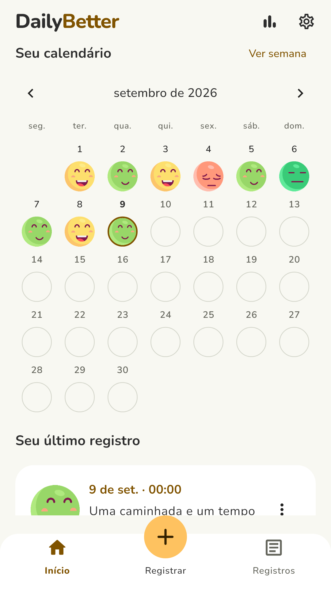
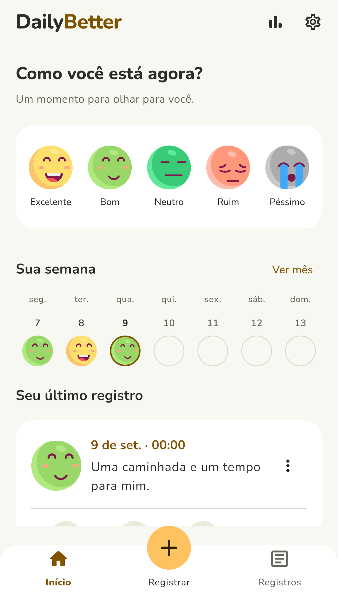
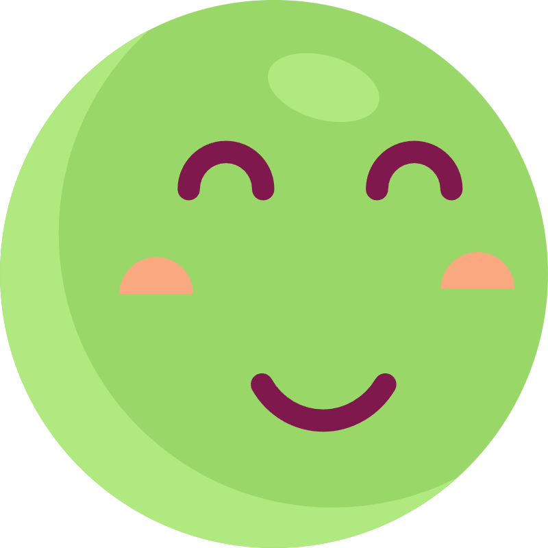
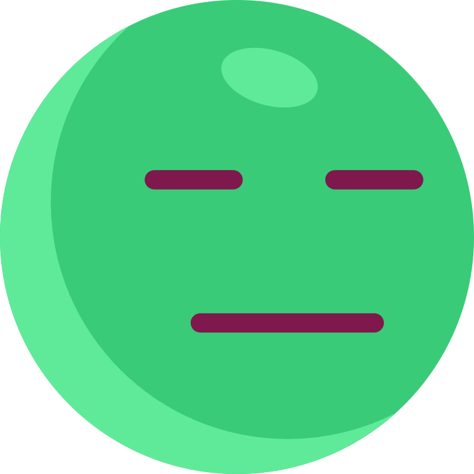
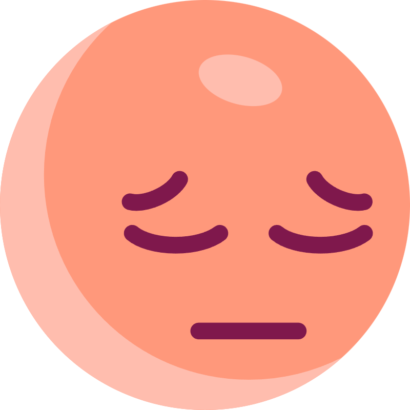
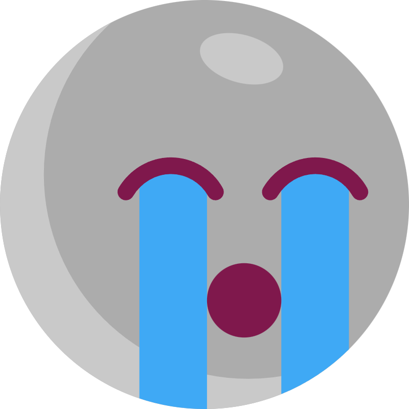
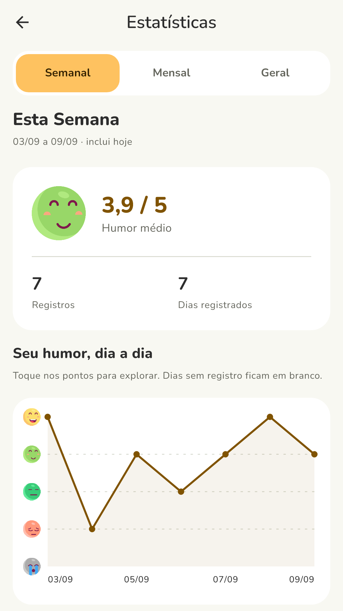
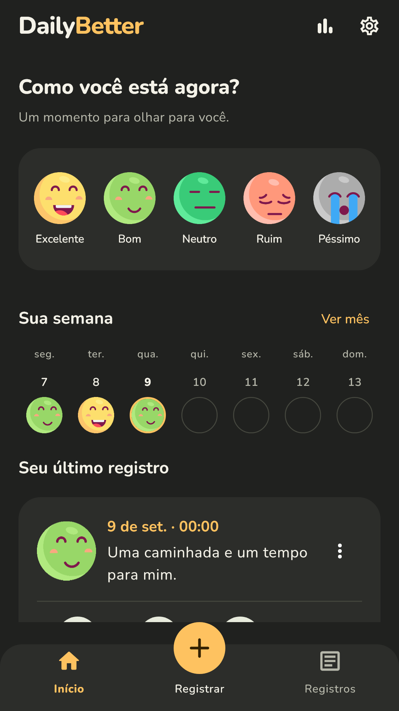

Seu mês tem muitas cores.
Volte aos dias que passaram e veja como se sentiu. Seu calendário guarda os momentos bons e os difíceis.
Os leves, os difíceis e os que passam no meio. Registre seu humor e conheça melhor o seu ritmo com o DailyBetter.



Não existe um jeito certo de sentir.
Existe o seu jeito de registrar.



Um check-in pode ser só uma carinha. E, quando fizer sentido, uma nota, uma atividade ou um pouco mais sobre o seu dia.
Cinco carinhas para encontrar a que combina com o momento.
Uma caminhada, uma conversa, uma noite de sono. Os detalhes são opcionais.
Seu registro vira parte de uma história que você pode revisitar.
Por aqui, todos os sentimentos têm espaço.
Que bom. Guarde um pouco desse momento.
Esta prévia não salva nem envia sua escolha. No app, você pode criar seu próprio diário.
Com o tempo, os detalhes se encontram. Você começa a perceber o que faz parte dos seus dias.
Volte aos dias que passaram e veja como se sentiu. Seu calendário guarda os momentos bons e os difíceis.
Gráficos semanais, mensais e um histórico visual ajudam a observar como seu humor varia.

O que aconteceu e o que fez diferença. Dê palavras aos momentos que quiser guardar.
Atividades, sono e energia ajudam a contar o que uma carinha sozinha não diz.
Escolha quando receber um convite para fazer uma pausa e registrar o dia.
Carinhas que você reconhece, um calendário simples e espaço para respirar. Escolha o tema que combina com o seu momento.
Prévia do tema escuro.
Explore mais telas
Telas reais do DailyBetter, com registros demonstrativos.
Seus registros de humor ficam no aparelho. Você decide o que escrever, o que guardar e quando exportar um backup.
Ler Política de PrivacidadeAlgumas respostas para você começar a conhecer o DailyBetter.
Não. Você pode registrar quando fizer sentido. A frequência ajuda a visualizar padrões, mas não existe obrigação de preencher todos os dias.
Sim. Escolher uma carinha já é suficiente. Nota, atividades, sono, energia e outros detalhes são opcionais.
O diário é armazenado localmente no aparelho. A função de backup permite exportar um arquivo para o local que você escolher. Não há sincronização automática do diário entre aparelhos.
Não. O DailyBetter é um diário de observação pessoal. Seus gráficos ajudam a acompanhar registros; não substituem avaliação ou orientação profissional.
Leve um pouco mais de atenção para os seus dias. Comece com uma carinha. O resto vem no seu tempo.
Ver no Google PlayPara Android